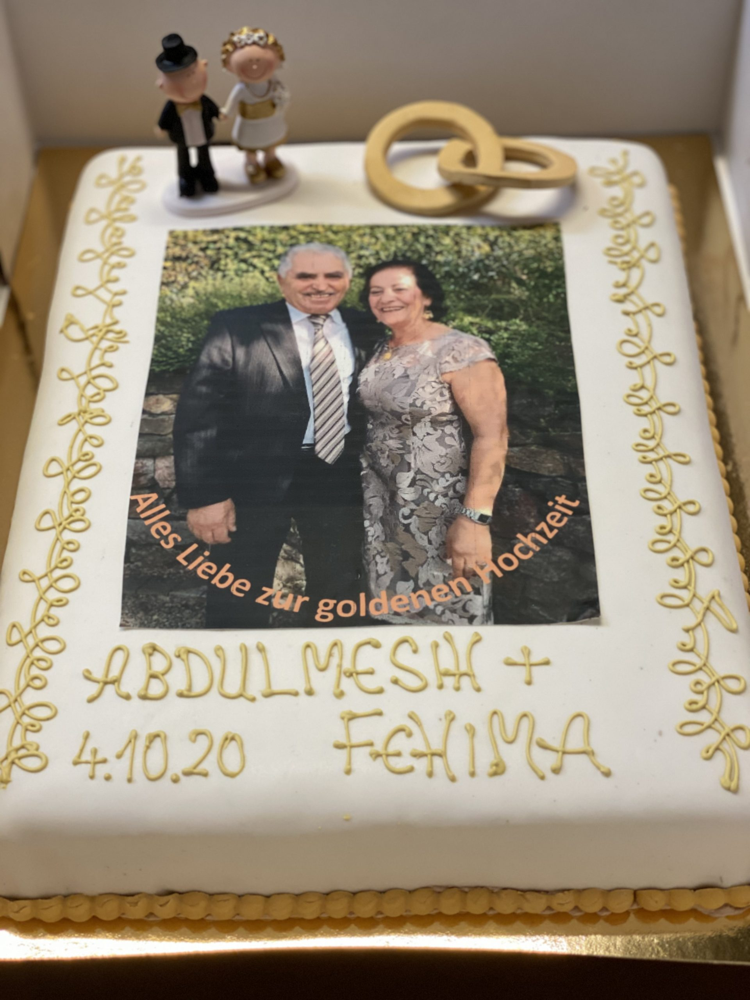
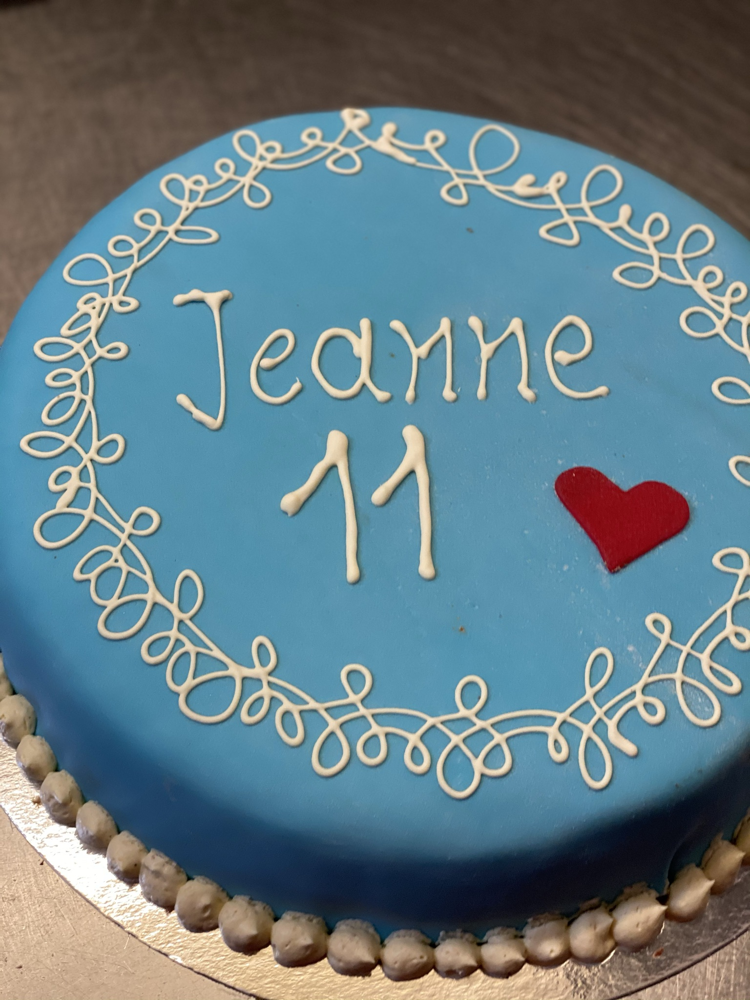
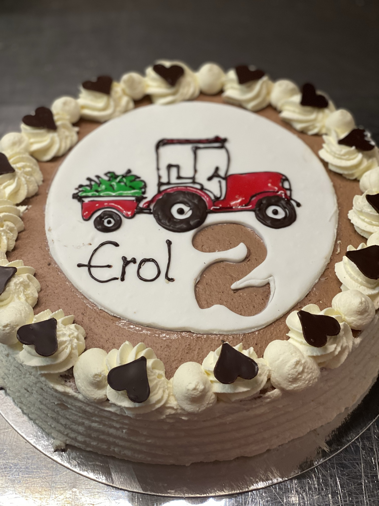
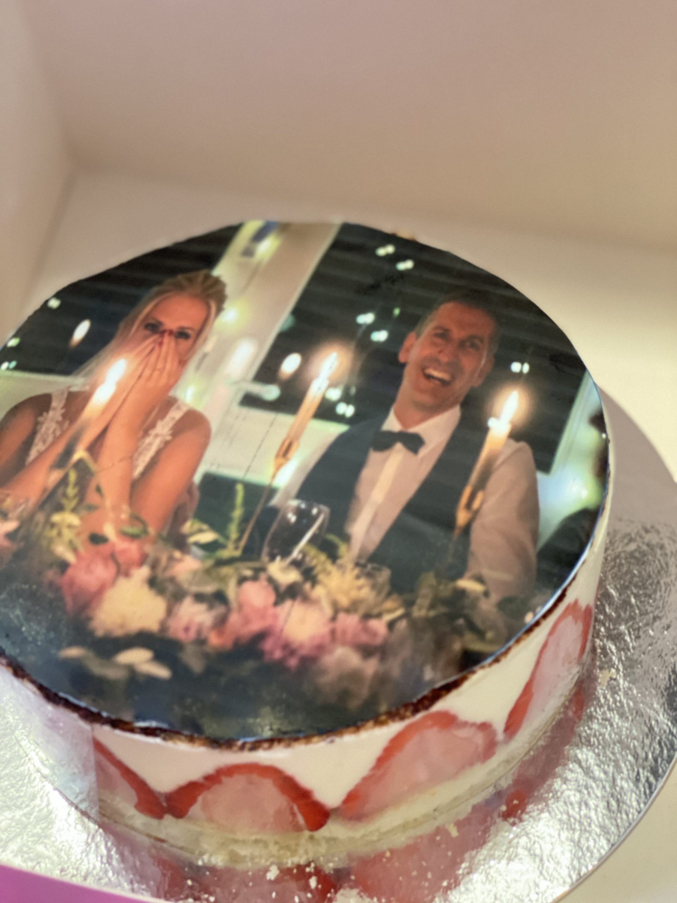
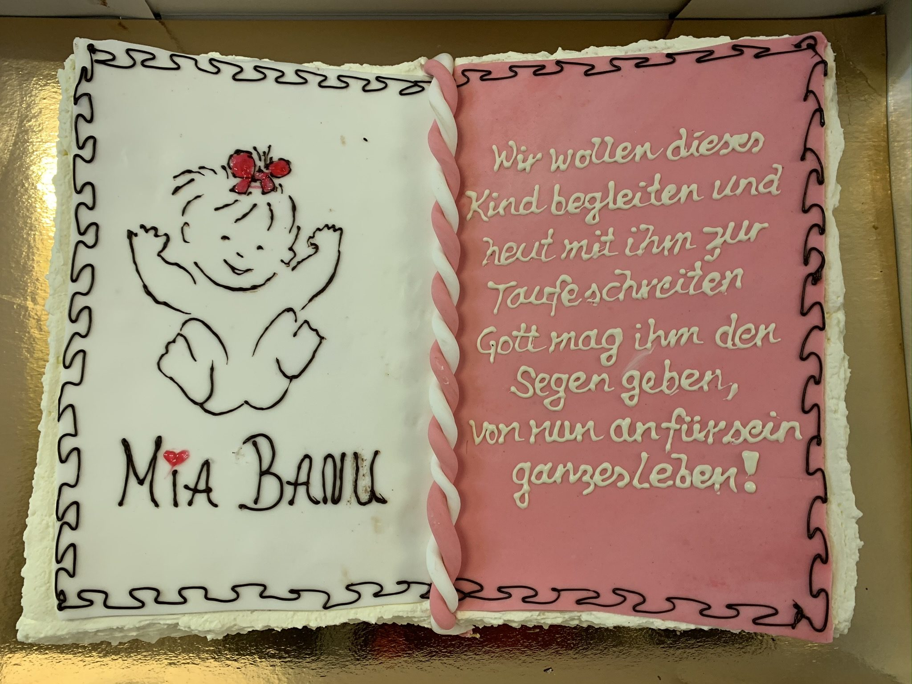
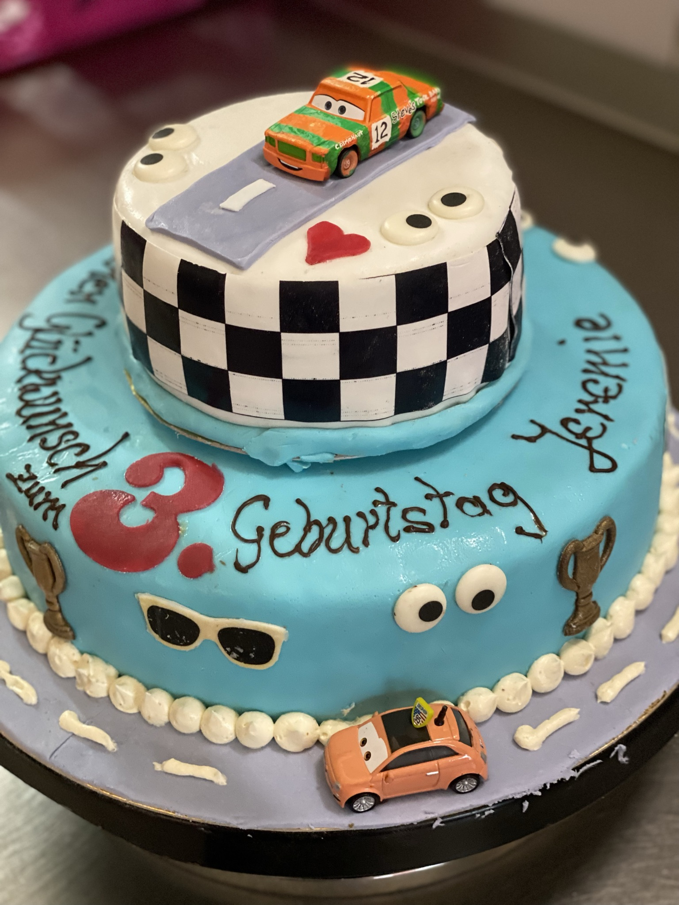

Konditoreikunst
Wir designen Ihre Traumtorte in Handarbeit
Wir bieten Ihnen eine große Anzahl Torten für die verschiedensten Anlässe. Sie bekommen von uns keine Torte von der Stange, sondern ein liebevoll gestaltetes Einzelstück. Als unser Kunde stehen Sie dabei im Mittelpunkt.

Hochzeitstorten
Das süße Highlight auf Ihrer Hochzeit. Die Hochzeitstorte ist der Blickfang jeder Feier. Bestellen Sie am besten einige Wochen vor der Feier.

Geburtstagstorten
Beschenken Sie Ihre Liebsten mit einer süßen Überraschung. Ein Geschenk ist besonders wertvoll, wenn es sich um ein Stück handelt, das sonst nirgends erhältlich ist.

Kindertorten
Zaubern Sie Ihren Kindern ein Lächeln ins Gesicht. Eine Kindertorte kann viel mehr sein als nur eine süße Nachspeise — oft überziehen wir sie mit Fondant und verzieren sie mit Schokolade.

Fototorten
Designen Sie Ihre Torte mit Ihren eigenen Bildwünschen. Für Geburtstage, Vereinsfeiern und viele andere Events setzen Sie mit einer Fototorte besondere Akzente.

Konfirmations- & Tauftorten
Feiern Sie diesen besonderen Tag mit Ihren individuellen Tortenwünschen. Die Taufe ist die erste große Feier im Leben — wir gestalten eine Torte, die diesen Tag würdig begleitet.

Besondere Anlässe
Torten in allen Variationen. Eine Torte ist immer ein willkommenes Gastgeschenk — die Kreation sollte den Grund der Feier widerspiegeln.
Besondere Anlässe
Sie erhalten von unserem Fachbetrieb Torten für jeden Anlass. Eine Torte ist immer ein willkommenes Gastgeschenk. Wichtig ist, dass die Tortenkreation den Grund der Feier widerspiegelt. Kommen Sie in eine unserer Filialen und lassen sich beeindrucken von den Ideen zum Kindergeburtstag, Firmenjubiläum, für den Schulabschluss, für Vereinsfeiern und vielen anderen Events.
Unsere Konditoren realisieren Ihre Wünsche und Vorstellungen. Durch ein Gespräch mit uns vor Ort erhalten Sie weitere Ideen. Wir zaubern für Sie eine Obsttorte, die zum Event und zur Jahreszeit passt oder eine Sahnetorte mit unterschiedlichsten Geschmacksrichtungen.
Ein guter Konditor ist nicht nur Handwerker, sondern Künstler. Wenn Sie eine Torte bestellen, erleben Sie, dass dieser Spruch keine leere Phrase ist. Kommen Sie zu uns und lassen Sie sich unverbindlich beraten.
Geburtstagstorten
Der Geburtstag ist ein guter Anlass, eine Torte zu bestellen. Ein Geschenk ist besonders wertvoll, wenn es sich um ein Stück handelt, dass sonst nirgends erhältlich ist. Mit einer Geburtstagstorte von der Bäckerei Friedrich erfüllen Sie diesen Anspruch.
Eine Torte für den Kindergeburtstag muss anderen Ansprüchen genügen als eine Sahnetorte für den Großvater. Nehmen Sie sich ein wenig Zeit und lassen Sie Ihren Gedanken freien Lauf. Unser Konditormeister ergänzt Ihre Ideen mit seinem fachlichen Wissen.
Geburtstage werden häufig nach dem gleichen Muster gefeiert. Mit individuellen Geburtstagstorten von der Bäckerei Friedrich durchbrechen Sie diese Routine und bleiben lange in Erinnerung.
Kindertorten
Es gibt nichts Schöneres als strahlende Kinderaugen. Eine Kindertorte kann viel mehr sein als nur eine süße Nachspeise. Sie erweckt Helden der Kinder und Gestalten ihrer Fantasie zum Leben. Sie können bei uns eine Motivtorte bestellen, die außen bunt ist und innen eine Überraschung bereithält.
Wer seine Kinder gut kennt, weiß in der Regel, welche Helden sie lieben. Oft überziehen wir Torten mit einem besonderen Zuckerüberzug (Fondant) und verzieren sie mit Schokolade. Dabei entsteht ein Bild, das wir zusätzlich farbig gestalten. Ausschlaggebend sind dabei immer Ihre Wünsche.
Fototorten
Für Geburtstage, Vereinsfeiern und bei vielen anderen Events setzen Sie mit einer Fototorte besondere Akzente. Torten mit einem Foto sind nicht nur ein Geschenk, sondern ein Präsent mit einer Aussage.
Ein Portrait ist jedoch nur eine von vielen Möglichkeiten, die Ausdruckskraft einer Fototorte einzusetzen. Bei einer Vereinsfeier erstellen wir Ihnen gerne eine Tortenkreation mit einem Logo Ihres Vereins. Wenn Sie eine Motivtorte mit einem Bild verzieren lassen, können Sie an schöne Momente aus der gemeinsamen Vergangenheit erinnern.
Hochzeitstorten
Die Hochzeit ist der schönste Tag im Leben und dazu gehört auch eine besondere Hochzeitstorte. Sie ist der Blickfang jeder Hochzeit. Beim feierlichen Höhepunkt der Feier schneidet das Paar gemeinsam die Torte an.
Eine Hochzeitstorte bestellen Sie am besten einige Wochen vor der Feier. Für unsere Konditorei ist die Hochzeitstorte nicht irgendein Gebäck, sondern soll auf der Feier einen zusätzlichen Glanzpunkt setzen. Wichtig ist, welche Verzierung gewählt wird und ob die ausgefallene Torte ein- oder mehrstöckig ist.
Konfirmations- & Tauftorten
Die Taufe ist die erste große Feier im Leben eines Menschen. Um diesen Tag würdig zu begehen, erstellen wir Ihnen eine Torte, die nicht nur auf dem Fest gut aussieht, sondern auch ein beliebtes Motiv auf unzähligen Tauffotos ist. Sie erhalten aus unserer Konditorei eine Torte genau nach Ihren Wünschen.
Neben einer Tauftorte bieten wir Ihnen auch eine ausgefallene Torte für die Konfirmation Ihres Kindes an. Wir schmücken die Sahnetorte mit religiösen Symbolen, erstellen jedoch auch eine Fototorte mit einem schönen Bild des Konfirmanden.
Überzeugen Sie sich selbst!
Ihnen läuft schon beim Stöbern auf unserer Website das Wasser im Mund zusammen? Überzeugen Sie sich persönlich von unserem leckeren Brot, schmackhaften Brötchen sowie raffinierten Kuchen und Torten! Besuchen Sie uns in unseren Filialen oder nehmen Sie einfach mit uns Kontakt auf.
Kontaktieren Sie uns!